L'ambito grafico è un contesto troppo ampio da poter sintetizzare in un solo articolo. In questo articolo si andrà solo a spiegare come creare un grafico e modificarne la struttura e le impostazioni. Non si andra a spiegare quali grafici è meglio utilizzare nei diversi contesti che si presentano.
Dato un dataset per inserire un grafico occorre selezionare la matrice di dati e andare su "INSERISCI >" e selezionare il tipo di grafico più adatto alla situazione.
Possiamo distinguere 8 categorie di grafici disponibili in Excel:
1. Istogramma o grafico a barre
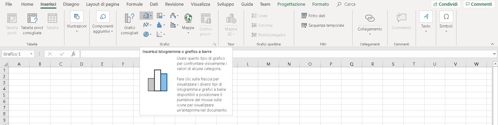
2. Grafico gerarchico
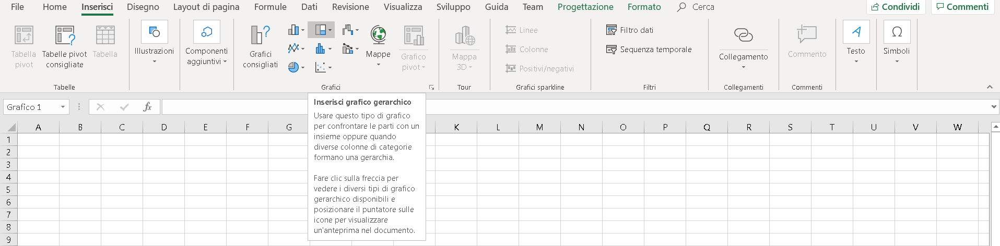
3. Grafico a cascata, imbuto, azionario, superficie o radar
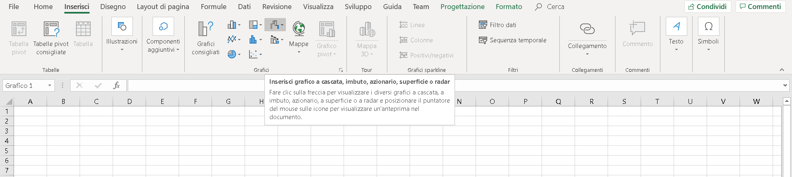
4. Grafico a linee o ad area
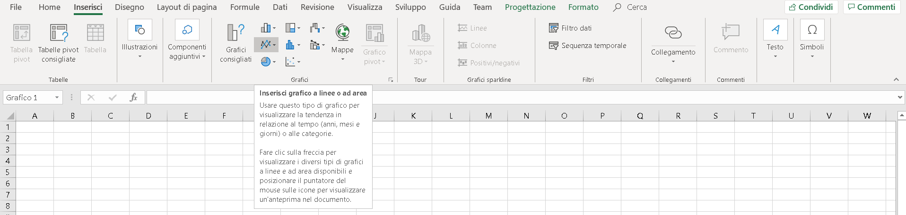
5. Grafico statistico
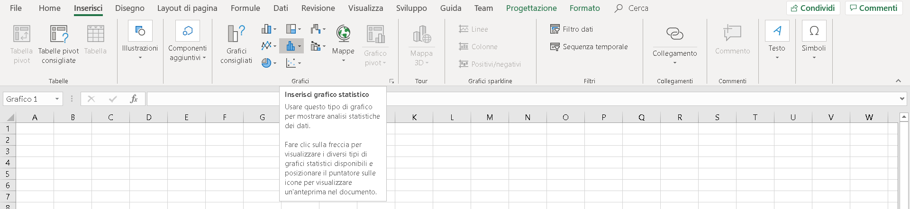
6. Grafico combinato
7. Grafico a torta o ad anello
8. Grafico a dispersione
Per chi fosse dotato di Office 365 in inglese, francese, spagnolo, tedesco, cinese semplificato e giapponese si consiglia anche lo strumento "ideas" il quale consiglia determinati grafici che possono sintetizzare le informazioni contenute in una tabella.
Link in Italiano
Link in Inglese
Alternativamente si può utilizzare lo strumento grafici consigliati, grazie al quale, una volta selezionati i dati consente di creare grafici che sintetizzano in modo standard il set di dati distinguendo la natura delle variabili. Questo strumento, inferiore rispetto a "ideas" può essere utile in alcune situazione per creare grafici sintetici e standard.
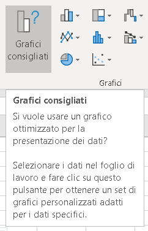
Grafico Pivot
Un grafico pivot rappresenta i dati di riepilogo di una tabella pivot. Si può creare un grafico pivot solo a partire da una tabella pivot.
Per creare un grafico pivot, fate clic su una cella della tabella pivot, quindi selezionate Strumenti tabella pivot > Analizza > Strumenti > Grafico pivot (Alt + JN G). Excel aprirà la finestra di dialogo Inserisci grafico, in cui potete selezionare un tipo di grafico.
Vediamo un esempio:
Ipotiziamo di dover analizzare il seti di dati contenuto in
questo file (cliccare sul link per scaricarlo).
Creiamo una tabella pivot, come spiegato a questo
link, per capire quanto si è speso giorno per giorno, così formulata:
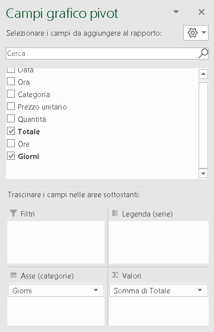
Creando poi un grafico pivot per linee, otteniamo che:
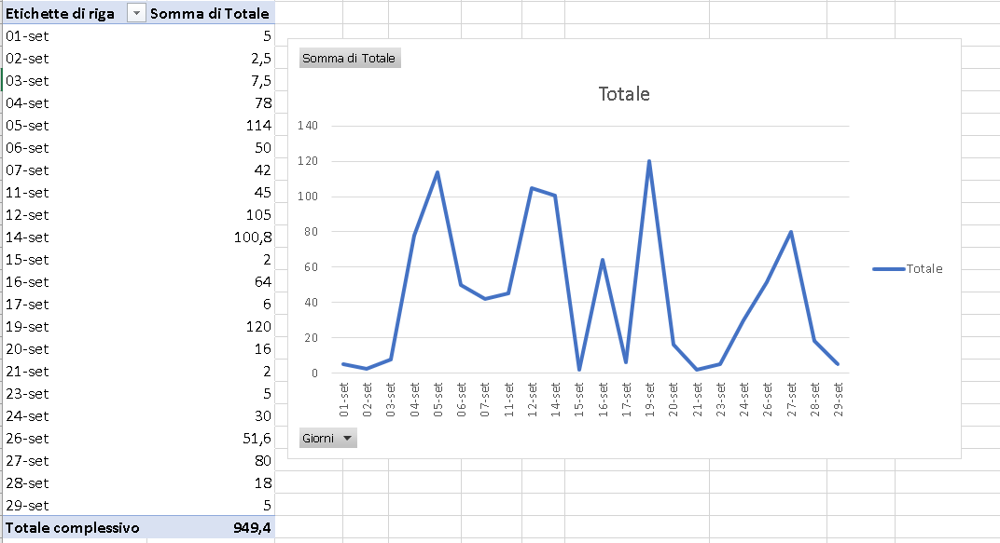
Se invece volessimo rappresentare graficamente quanto abbiamo speso per una categoria giorno per giorno per analizzarne il trend, allora dobbiamo formulare una tabella pivot come segue:
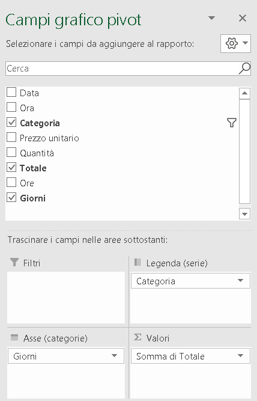
Creando poi un grafico pivot per linee, e filtrando per la categorie che ci interessa analizzare otteniamo che:
Singoli grafici per categoria
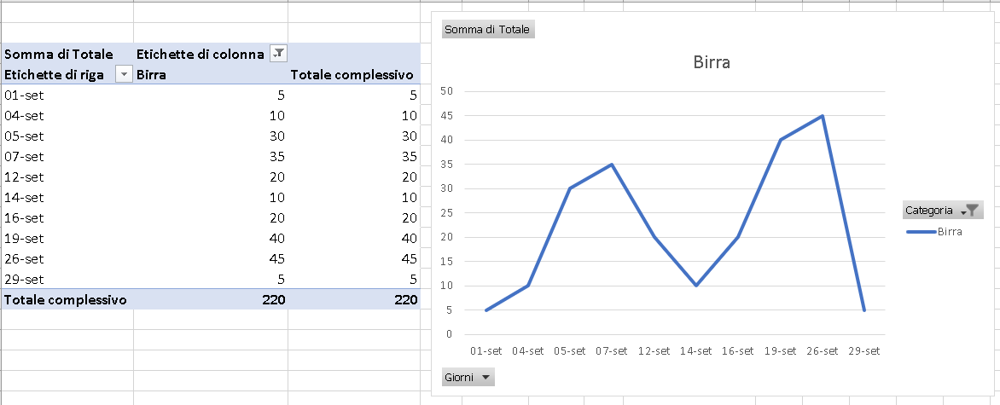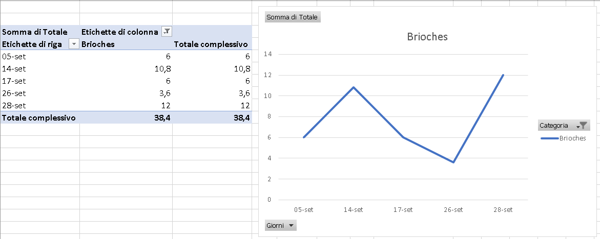
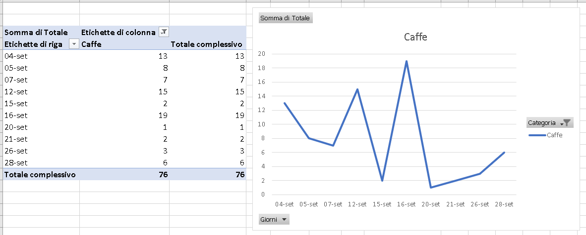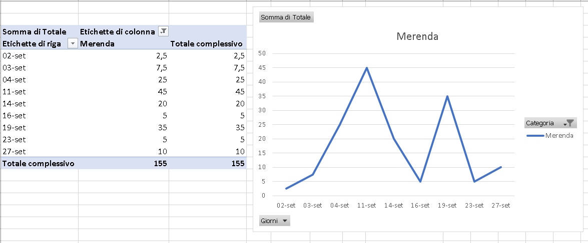
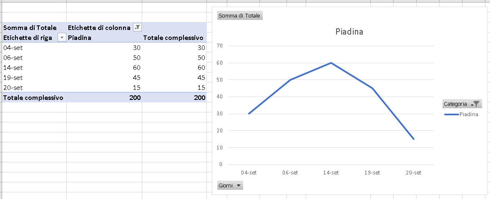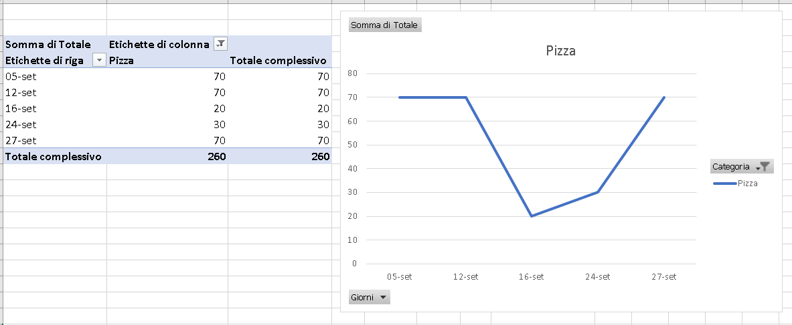
In questo esempio non è possibile in quanto ci sono giorni in cui non si è comprato una delle categorie, ma ad esempio nel caso di prezzi azionari registrati in piu giorni è possibile sovrapporre le linee di andamento e calcolarne il trend.
Per aggiungere il trend al grafico basta andare sulle impostazioni e aggiungere la linea di tendenza:
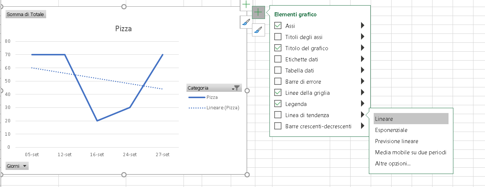